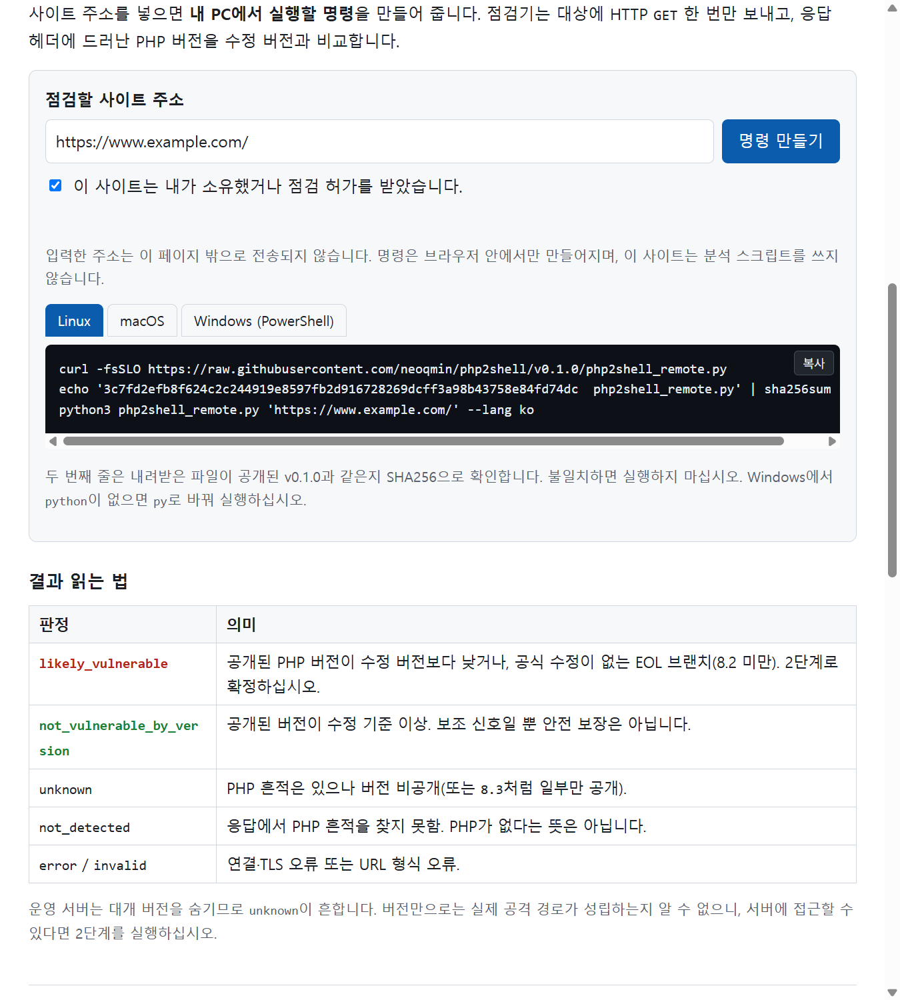
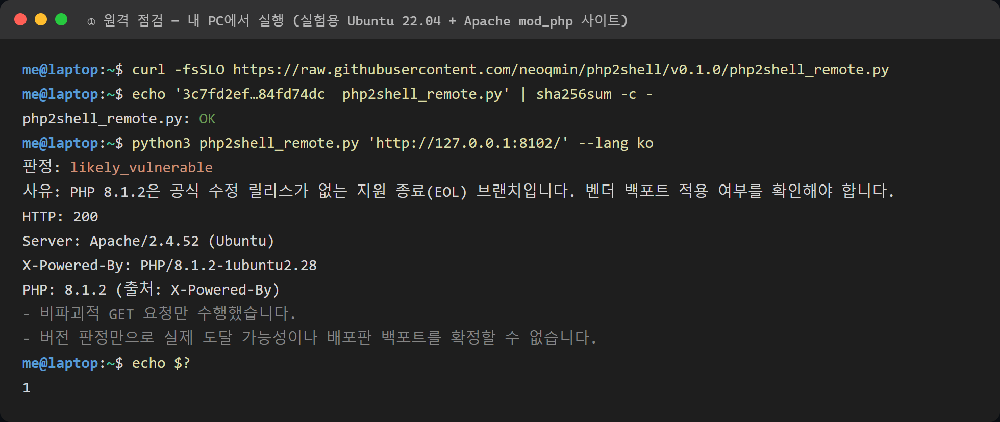
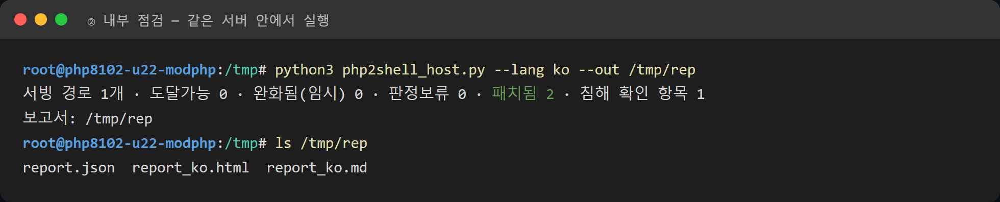
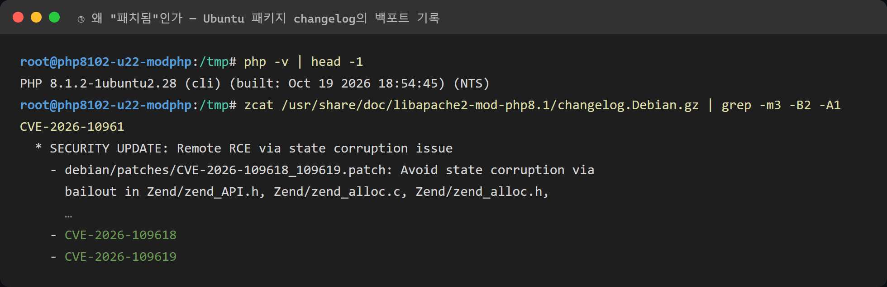
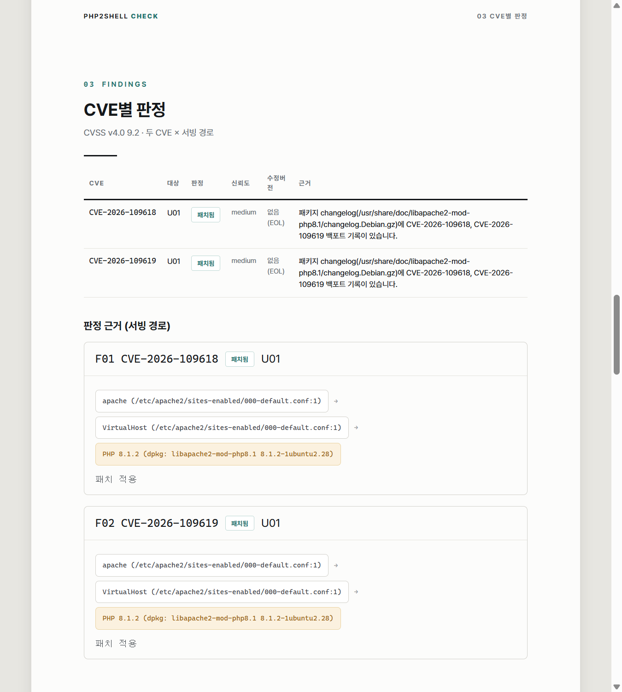

PHP2Shell(CVE-2026-109618·109619) 내 PHP 사이트 점검하는 법
2026-10-24 · php2shell-check 사용 가이드
2026년 10월 21일 공개된 PHP2Shell은 인증 없이 원격 코드 실행(RCE)까지 이어지는 PHP 런타임 취약점 두 건입니다. 웹 요청을 처리하는 PHP라면 Apache mod_php든 PHP-FPM이든 사실상 전부 영향을 받습니다. 공개 PoC가 있고, 공개 4일 전인 10월 17일부터 실제 공격 시도가 관측됐습니다.
이 글은 PHP 사이트를 운영하는 관리자가 "내 서버는 괜찮은가"를 확인하는 방법을 다룹니다. 공격 요청 없이 읽기만 하는 무료 오픈소스 점검 도구 php2shell-check를 사용합니다.
👉 바로 시작: https://edgebit.co.kr/php2shell/
⚠️ 시작 전에
본인 소유이거나 서면으로 점검 허가를 받은 시스템에만 사용하십시오. 요청 한 번짜리 비파괴 점검이라도 허가 없이 남의 시스템을 체계적으로 점검하면 정보통신망법 등에 저촉될 수 있습니다. 다른 조직의 서버에서 문제를 발견했다면 직접 검증하지 말고 운영 주체나 KISA 보호나라·KrCERT/CC로 알리십시오.
PHP2Shell 요약 — 내 버전은 안전한가
- CVE-2026-109618 — multipart 요청 파싱 중 메모리 한도(OOM)로 중단될 때 부분 초기화된 요청 데이터를 정리하다 메모리가 손상됨. CVSS v4.0 9.2
- CVE-2026-109619 — 요청이 끝난 뒤에도 남은 내부 상태를 같은 워커의 다음 요청이 사용(Use-After-Free). CVSS v4.0 9.2
- PHP는 Apache mod_php를 최고 위험으로 평가했습니다. PHP-FPM도 영향을 받습니다.
| PHP 브랜치 | 수정 버전 |
|---|---|
| 8.5 | 8.5.12 이상 |
| 8.4 | 8.4.27 이상 |
| 8.3 | 8.3.36 이상 |
| 8.2 | 8.2.35 이상 |
| 8.1 이하 | 공식 수정 릴리스 없음 → 배포판·LTS 벤더 패키지 또는 업그레이드 |
(기준 시점 2026-10-23)
먼저 알아둘 것 — 버전 번호만 보면 틀린다
위 표만 보고 판단하면 오판하기 쉽습니다. Ubuntu·Debian 같은 배포판은 버전 번호를 올리지 않고
보안 패치만 골라 넣는 백포트를 합니다. 그래서 8.1.2처럼 낡아 보이는 버전도 이미 고쳐졌을 수 있습니다.
반대로 버전이 최신이어도 앞단 프록시 뒤에 다른 서버가 숨어 있을 수 있습니다.
그래서 이 도구는 두 단계로 나뉩니다. 1단계(원격)는 사이트 주소만으로 빠르게 걸러 내고, 2단계(서버 내부)는 패키지 기록과 실제 설정으로 확정합니다. 아래 실제 사례에서 두 결과가 어떻게 달라지는지 보입니다.
1단계 — 사이트 주소로 1차 확인 (내 PC에서)
점검 페이지에서 사이트 주소를 넣고 소유·허가 확인란에 체크하면, 운영체제별로 실행할 명령을 만들어 줍니다. 입력한 주소는 브라우저 밖으로 전송되지 않습니다.

Linux 기준 명령은 세 줄입니다. 두 번째 줄은 내려받은 파일이 공개된 v0.1.0과 같은지 SHA256으로 확인합니다.
curl -fsSLO https://raw.githubusercontent.com/neoqmin/php2shell/v0.1.0/php2shell_remote.py
echo '3c7fd2efb8f624c2c244919e8597fb2d916728269dcff3a98b43758e84fd74dc php2shell_remote.py' | sha256sum -c -
python3 php2shell_remote.py 'https://내사이트주소/' --lang koPython 3.8 이상만 있으면 되고 추가 설치는 없습니다(표준 라이브러리만 사용). 점검기는 대상에 HTTP GET 한 번만 보내고, 응답 헤더에 드러난 PHP 버전을 수정 버전과 비교합니다.
아래는 실험용으로 띄운 Ubuntu 22.04 + Apache mod_php 사이트(배포판 기본 PHP 패키지)를 점검한 실제 결과입니다.

헤더에 PHP/8.1.2-1ubuntu2.28이 노출됐고, 8.1은 공식 수정이 없는 지원 종료 브랜치라서
likely_vulnerable이 나왔습니다. 그런데 도구 스스로 "배포판 백포트를 확정할 수 없다"고 적고 있습니다. 이 서버는 2단계로 확정해야 합니다.
1단계 결과 읽는 법
| 판정 | 의미 | 다음 할 일 |
|---|---|---|
likely_vulnerable | 노출된 버전이 수정 버전 미만이거나 EOL 브랜치 | 2단계로 확정 |
not_vulnerable_by_version | 노출된 버전이 수정 기준 이상 | 보조 신호일 뿐, 서버 인벤토리로 재확인 |
unknown | PHP 흔적은 있으나 버전 비공개 | 2단계 실행 |
not_detected | 응답에서 PHP 흔적 없음 | PHP가 없다는 뜻은 아님 |
expose_php = Off로 설정했거나 프록시·로드밸런서가 헤더를 지우면 버전이 보이지 않아 unknown이 나옵니다.
종료 코드는 1=likely_vulnerable, 0=not_vulnerable_by_version, 3=판정 불가라서
여러 사이트를 스크립트로 돌릴 때 활용할 수 있습니다.
2단계 — 서버 안에서 확정 점검
PHP가 돌아가는 Linux 서버에 접속해 실행합니다. 설정·로그를 읽어야 하므로 root 권한이 필요합니다.
curl -fsSLO https://raw.githubusercontent.com/neoqmin/php2shell/v0.1.0/php2shell_host.py
echo '50a48c79c120774e9dccc27ee12672444b7730b31a32c2b833e650920ebf0925 php2shell_host.py' | sha256sum -c -
sudo python3 php2shell_host.py --lang ko
이 점검기는 설정 파일, 패키지 정보(/var/lib/dpkg/status, changelog), /proc, 로그를
읽기만 합니다. 명령 실행 0건, 네트워크 요청 0건이며, 보고서 폴더 말고는 아무것도 쓰지 않습니다.
무엇을 읽었는지는 보고서 마지막의 투명성 부록에 전부 기록됩니다.
같은 실험 서버에서 실행한 결과입니다.

원격에서는 likely_vulnerable이었는데, 서버 안에서는 두 CVE 모두 패치됨입니다.
이유는 패키지 changelog에 있습니다.

Ubuntu가 8.1.2-1ubuntu2.28 패키지에 두 CVE 수정 패치를 백포트해 두었습니다.
버전 번호만 봤다면 "8.1이니 위험, 당장 업그레이드"라고 판단했을 서버입니다.
원격 점검은 걸러 내는 용도, 확정은 서버 안에서 하는 이유가 바로 이것입니다.
보고서에는 무엇이 들어 있나
결과는 ./php2shell_report_<호스트명>/에 report.json(기계 판독),
report_ko.md(메일·이슈 첨부), report_ko.html(A4 인쇄)로 저장됩니다.

- CVE별 판정 — 도달가능 / 완화됨(임시) / 판정보류 / 패치됨
- 근거 경로 — 웹서버 설정 → VirtualHost·FPM pool → PHP 빌드를 파일·줄 번호로 표시
- 조치 사항 — 어느 파일 몇 번째 줄을 어떻게 바꿀지, 확인 명령까지
- 침해 징후 확인 항목 — 첫 공격 관측일(10-17) 이후 변경된
.php파일 등
판정 중 "판정보류"는 "안전"이 아니고, "완화됨(임시)"도 안전이 아닙니다. PHP 측은 설정만으로는 완전히 완화되지 않는다고 밝혔습니다. 보고서에는 서버의 취약점 정보가 담기므로 공개 게시판이나 이슈에 올리지 마십시오.
당장 패치할 수 없다면 — 임시 완화의 함정
유일한 완전 해결책은 PHP(또는 배포판 패키지) 업데이트입니다. 그 전까지의 임시 완화는 어디에 설정하느냐가 핵심입니다.
session.upload_progress.enabled=0, PHP 8.5라면fatal_error_backtraces=0→ php.ini, FPM pool, 웹서버 설정처럼 요청 파싱 전에 적용되는 곳에 넣고 워커를 모두 재시작post_max_size를 줄이고upload_max_filesize를 그보다 작게, 업로드를 안 쓰는 앱이면 PHP 앞단에서 multipart 요청 차단- ❌
ini_set()과 FPM의.user.ini는 적용 시점이 늦어 효과가 없습니다 - ❌
display_errors·error_reporting으로 에러를 숨기는 것도 효과가 없습니다
2단계 점검기는 이렇게 "설정했지만 효과 없는 완화"(.user.ini, ini_set())와
"설정 변경 후 재시작 안 함"도 찾아서 보고서에 적습니다.
침해 여부도 같이 보기
공격 시도는 공개 4일 전부터 있었으므로, 조사 범위는 공개일이 아니라 10월 17일부터 잡는 것이 권고됩니다. 웹루트에서 그 이후 바뀐 PHP 파일을 배포 이력과 대조해 보십시오.
find /var/www -name '*.php' -newermt 2026-10-17 -ls관련 로그가 없다고 해서 침해가 없었다는 증거는 아닙니다.
정리 — 관리자 체크리스트
- 운영 중인 PHP 사이트 주소로 1단계 원격 점검을 돌려 걸러 낸다
likely_vulnerable·unknown이 나온 서버는 2단계 내부 점검으로 확정한다- 버전 번호만으로 판단하지 않는다 — 배포판 백포트를 changelog로 확인한다
- 패치가 가능하면 바로 패치한다. 불가능하면 임시 완화를 올바른 위치에 넣고 워커를 재시작한다
- 10월 17일 이후 변경된 PHP 파일과 로그로 침해 여부를 확인한다
링크
- 점검 페이지(한국어·English·日本語): https://edgebit.co.kr/php2shell/
- 소스 코드·문서: https://github.com/neoqmin/php2shell (MIT 라이선스)
- 오탐·미탐 신고: GitHub 이슈 (특정 시스템의 취약점 정보는 쓰지 마십시오)
판정 결과는 공개 정보와 설정 파일에 근거한 추정이며, 안전을 보증하지 않습니다. 최종 판단과 조치는 시스템 관리자의 책임입니다.
이 글은 AI(Anthropic의 Claude)가 작성했습니다. 본문의 명령 출력과 스크린샷은 실험 환경에서 실제로 실행한 결과이며, 취약점 정보는 2026-10-23 기준 공개 자료를 정리한 것입니다.